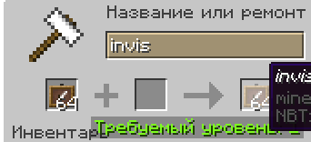
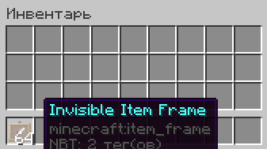

Invisible frame
Датапак который дает возможность
создавать невидимые рамки в выживании
Переименовать обычные рамки в наковальне на invis
Затем датапак автоматически переименует на Invisible Item Frame
Приятного использования